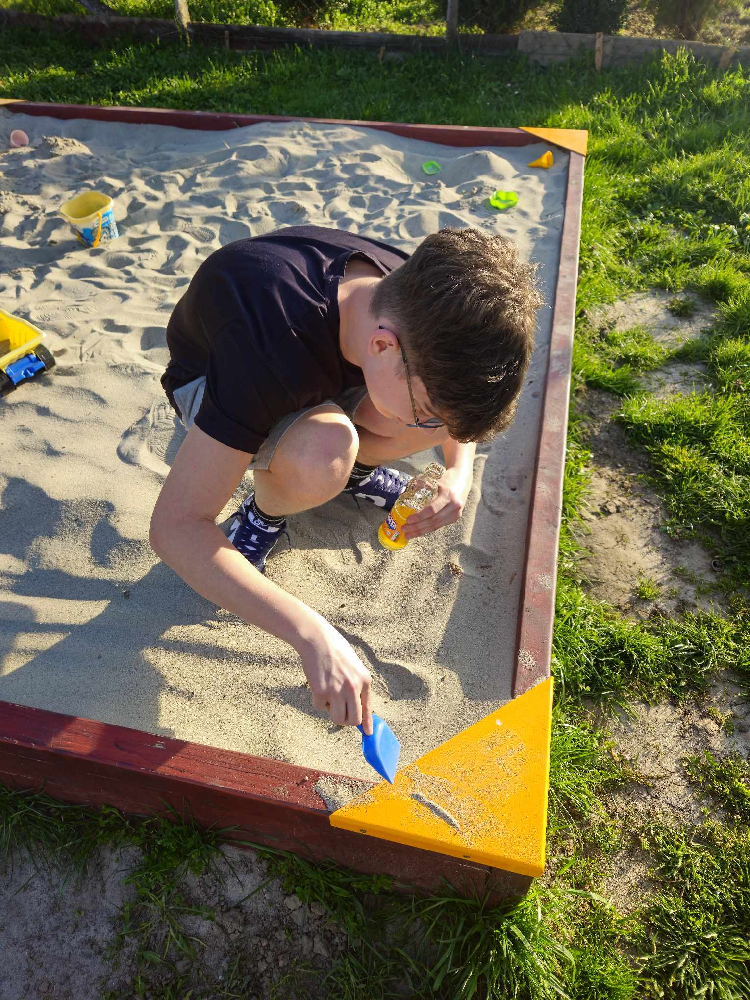
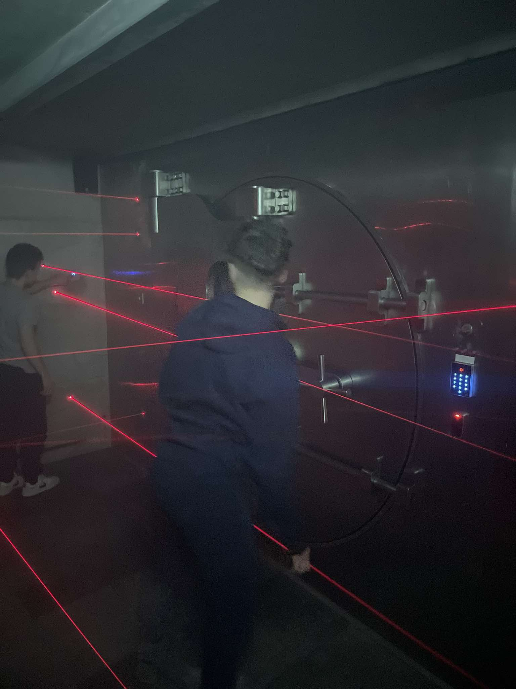
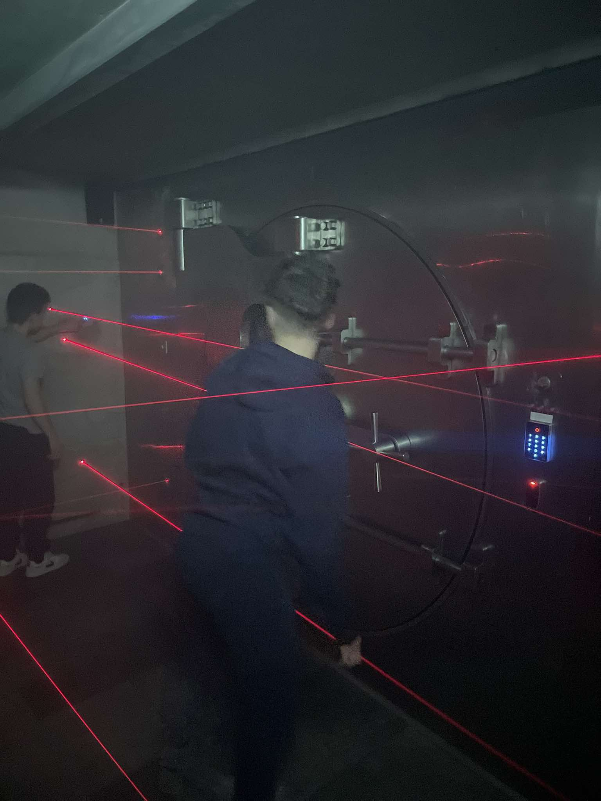

|
  

|
Személyes adatokNév: Dévai-Molnár MarcellNem: Férfi Születési hely: Anyuci hálószobájában Születési idő: 7 hónapja Állampolgárság: Magyar Kedvenc zenéje: |
Története:Dévai-Molnár Marcell – vagy ahogy a környéken előszeretettel hívják: „A Fiú, Aki 7 Hónapos Létére Már Mindent Jobban Tudott” – első pillantásra is egy ritka jelenség. Már a fotó is sugallja, hogy Marcell az a fajta karakter, aki egyszerre képes: vigyorogni, hülyéskedni, és közben úgy kinézni, mintha ő lenne a saját élete rockkoncertjének frontembere. Születési hely: Anyuci hálószobája Nem vicc. Legalábbis a dokumentum szerint. A legenda úgy tartja, hogy Marcell nem bírta kivárni, hogy beérjenek a kórházba — ő úgy döntött, hogy a család kedvenc szobájában érkezik, közvetlenül a hajszárító és a komód között. A családi anekdoták szerint érkezése közben a szoba lámpája háromszor pislogott, majd kiírta a levegőbe: „Sybau” máig nem tudni, miért. Származás: Magyar Marcell ezt nemcsak papíron, hanem hozzáállásban is hozza: úgy érzi, minden helyzeten javít egy jó nagy vigyor, egy csípős megjegyzés vagy egy teljesen indokolatlan nyelvöltés. A vele járó életérzés: „Nem tudom, mi történik, de élvezem.” 7 hónapja született – de már kész karakter A dokumentum szerint 7 hónapos, ám a képek teljesen mást sugallnak. Sőt, több mindent: lehet, hogy Marcell időutazó, lehet, hogy úgy nőtt, mint a Minecraft-fák, egyik pillanatról a másikra, de az is lehet, hogy egyszerűen egy olyan lélek lakik benne, aki már túl sokszor unta meg az életet, és most újra kezdte. A fotókon látható energiája alapján ő az első ember, aki 7 hónapos kora után rögtön „életpálya-modellbe lépett”. A Sybau-rejtély A fő képen hatalmas betűkkel szerepel a „Sybau”. A szakértők vitatkoznak róla, mit jelenthet: Marcell saját márkát alapított? Egy titkos társaság tagja? Vagy egyszerűen a háttér véletlen kiírása, amit ő annyira komolyan vett, hogy azóta is Sybaunak hívja magát? Egy biztos: Marcell bárhova megy, ott mindig történik valami furcsa. A mellékképek tanulsága A többi fotó alapján Marcell: néha romantikus, néha csuklyás titokzatos hős, néha bulizik, de mindig hozza a „száz százalék Marci” életérzést. |
Kapcsolódó körözésekTanár bosszantása – Btk. 420.§Órai rendbontás – Btk. 666.§ |